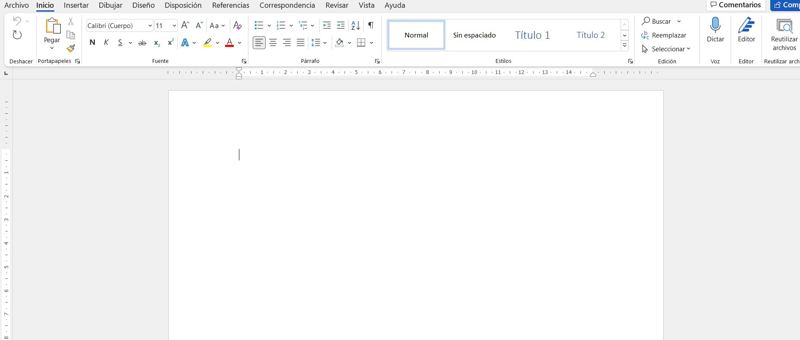
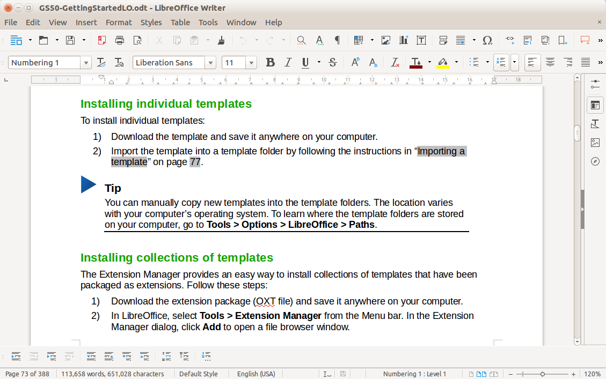

Word es el programa por excelencia en Windows para escribir documentos y modificar documento de texto , por su amplia gama de funciones que tiene en su poder. Este programa es uno de lo más conocidos a nivel mundial. Para instalarlo podemos ir a su web oficial pinchando en la imagen de la derecha.
Una vez instalado el Word en nuestro dispositivo , podemos hacer y modificar cualquier documento.Cómo podemos ver en la imagen la pantalla inical para comenzar a hacer nuestro primer documento o añadir cualquiera para ser modificado sin complicaciones
Para instalar Libreoffice Writer lo único que tenemos que hacer es irnos a la appstore de Ubuntu y buscar por el nombre y aceptamos los avisos que nos sale. Una vez hecho esto ya podemos trabajar con nuestro programa con total normalidad
Cuando iniciamos el programa , ya podremos hacer nuestro documento y modificar si tuvieramos que hacerlo , Libreoffice Writer es uno de los mas popupales a nivel de Ubuntu.
LibreOffice por su parte es un software de código abierto disponible para todos los sistemas operativos existentes desarrollado por The Document Foundation, mientras que Microsoft Office pertenece a Microsoft, que a su vez es código privado y esta disponible para Windows, Mac OS y Android de forma exclusiva.
Ambas suits usan generalmente la versión instalable típica, pero LibreOffice por su parte ofrece una versión portable que no requiere instalación, con lo que la puedes instalar en un USB y usar dicha suit en cualquier lado sin necesidad de instalar el programa.
Posee 91 idiomas disponibles en su versión de Windows y 27 en la versión de Mac OS, mientras que LibreOffice ofrece 116 idiomas para todos los dispositivos, con la opción de colaborar en las traducciones y añadir más idiomas.
En cuanto al apartado de colaboración en la nube Office por su parte nos ofrece Office Online o OneDrive mediante sus servicios, frente a un LibreOffice repleto de opciones, donde podemos elegir Collabora, nubes como Nextcloud y decenas de opciones integradas con su suit ofimática.
Otra diferencia que todos conoceremos es el precio económico, pues LibreOffice es gratuito y Office de pago mesual/anual.
•Versión:
kernel versión 3.10 o superior;
•Equipo y procesador
PC Pentium compatible (Pentium III, Athlon, aunque se recomienda un sistema más reciente);
• Memoria
256 MB de RAM (se recomienda 512 MB de RAM);
• Disco duro
Al menos 1,55 GB disponibles en disco;
•Pantalla
X Server con resolución de 1024 X 768 (se recomienda más alta), con al menos 256 colores;
Gnome 3.18 o más reciente, con el paquete at-spi 1.32,
u otra interfaz gráfica de usuario compatible (tal como KDE, entre otras).
•Versión
Windows 7, Windows8, Windows 10, Windows 11.
•Equipo y procesador
Windows OS: 1.6 GHz o más rápido, dos núcleos
macOS: Procesador Intel
•Memoria
Windows OS: 4 GB de RAM; 2 GB de RAM (32 bits)
macOS: 4 GB de RAM
•Disco duro
Windows OS: 4 GB de espacio disponible en disco
macOS: 10 GB de espacio en disco disponible.
•Pantalla
Windows OS: Resolución de pantalla de 1280 x 768
macOS: Resolución de pantalla de 1280 × 800